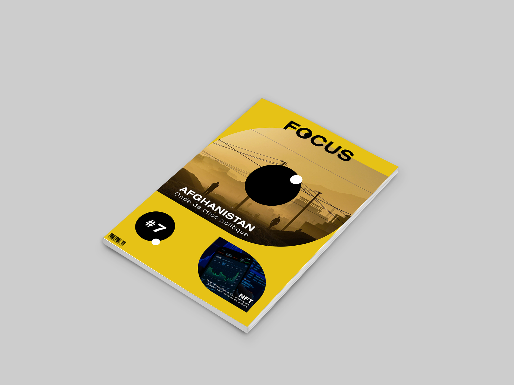
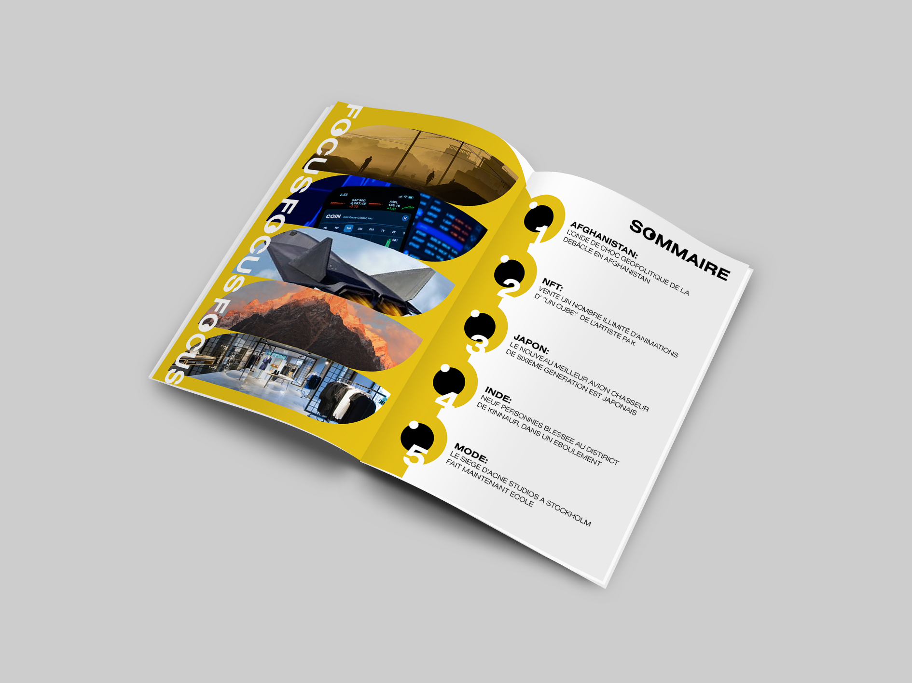

Voici un projet de création d'affiche A3 pour faire la promotion du port du masque, le tout avec comme contrainte d'être fait de façon vectorielle, minimaliste et moderne.
 FOCUS est un magazine qui se veut changeant, dans l’actualité mais sans le désir de choc. L’objectif est d’attirer le lecteur seulement grâce à son réel intérêt en vers le sujet ou l’aspect graphique du magazine, et non à cause de procédé attirant les pulsions malsaines du lecteur. Tout ceci en gardant un aspect modernisant, pour rester dans l’ère du temps. 